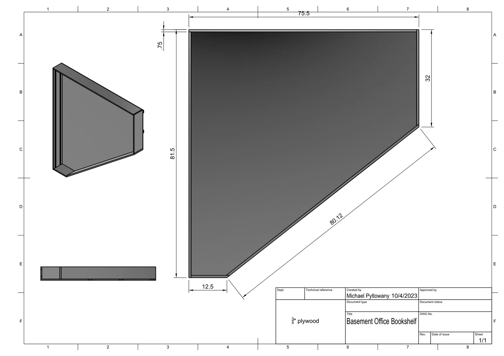
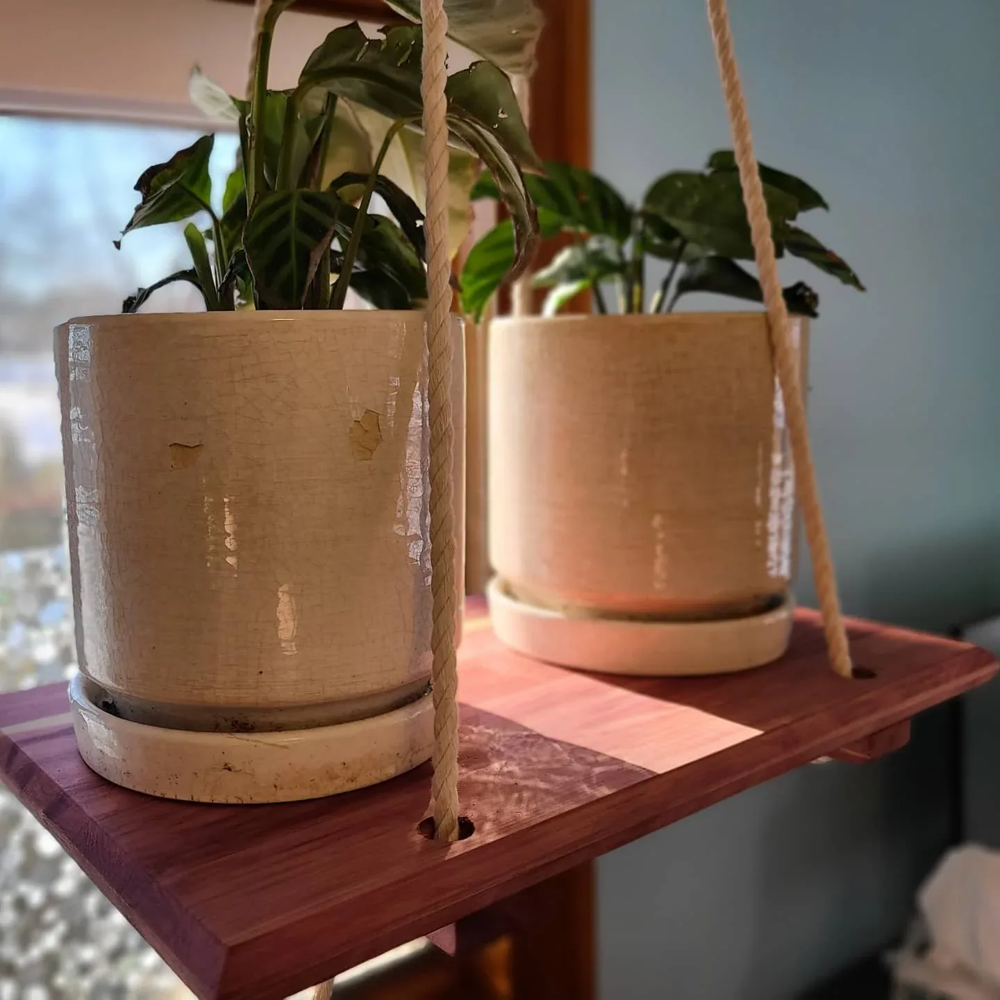

Built room
Built roomBasement bathroom: from Fusion to a real room
A Fusion room model paired with the actual basement construction: exposed drains, supply lines, and the tiled shower that followed. The bathroom now exists in our house.
Around the house • Residential project
A construction record of the basement taking shape, from open framing and concealed services to boarded walls and tiled spaces.
I photographed the basement while the framing, plumbing, and other services were still exposed. Most of that work disappeared behind board, tile, and finished surfaces, so the progress photos are the only way to see the full sequence now.
The plans and construction photos all belong to the same basement project. I kept them together so the room layouts can be compared with the plumbing, framing, and finished spaces that followed.
The bathroom page pairs its Fusion drawing with plumbing and tile photos. The angled bookshelf also has its own page, including the drawing and the finished installation.
I worked on the room layout and documented the basement while it was being built. The photos follow the project from open framing and exposed plumbing through wall enclosure, tile, and finished rooms. That sequence matters because most of the mechanical work disappeared once the walls closed. I am keeping my role specific here: the design work and owner documentation are mine, while the archive does not break down every construction responsibility.
Project archive supplied by Michael Pytlowany. The photographs do not allocate individual construction tasks.
The exact final completion date and division of labor are not inferred from folder names. The separate 2026 upstairs-bathroom project is not combined with this record.
Owner basement project archive, dated progress folders
February-April 2023
THE PARTS THAT END UP HIDDEN
Selected photographs from the project archive. These show the stage pictured, not a claim that the entire room was complete at that point.
The wall layout before the enclosure.
The construction view that disappears beneath the floor.
Boarded walls, openings, and ceiling lighting.
The bathroom tiling stage, linked to the dedicated room entry.
KEEP EXPLORING
Built roomA Fusion room model paired with the actual basement construction: exposed drains, supply lines, and the tiled shower that followed. The bathroom now exists in our house.

Built bookshelfA bookshelf made for an angled space in our house, with its original Fusion drawing preserved alongside the built-project story.

Piece / projectAromatic cedar, rope, and a new spot by the window.